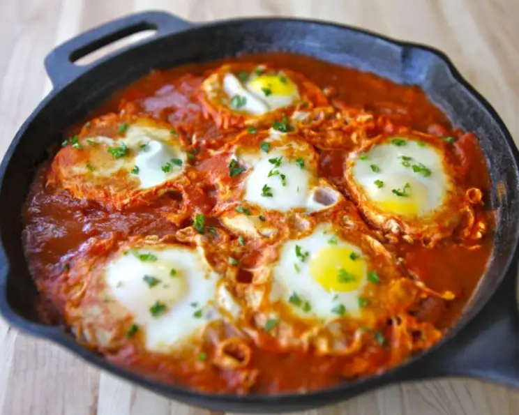

Tunisian Chakchouka is a flavorful and vibrant North African dish that reflects the rich culinary heritage of
Tunisia. Chakchouka is a versatile and comforting dish, enjoyed for breakfast, brunch, or as a satisfying side
or main course.
Ingredients:
- 3 tablespoons olive oil
- 1 ⅓ cups chopped onion
- 1 cup thinly sliced bell peppers, any color
- 2 cloves garlic, minced, or to taste
- 2 ½ cups chopped tomatoes
- 1 hot chile pepper, seeded and finely chopped, or to taste
- 1 teaspoon ground cumin
- 1 teaspoon paprika
- 1 teaspoon salt
- 4 large eggs
Steps:
- Heat olive oil in a skillet over medium heat. Stir in onion, bell pepper, and garlic; cook and stir until
vegetables have softened and onion has turned translucent, about 5 minutes.
- Meanwhile, mix together tomatoes, chile pepper, cumin, paprika, and salt in a bowl.
- Stir tomato mixture into onion mixture. Simmer, uncovered, until tomato juices have cooked off, about
10 minutes.
- Make 4 indentations in tomato mixture; crack eggs into indentations. Cover the skillet and cook until
eggs are firm but not dry, about 5 minutes.